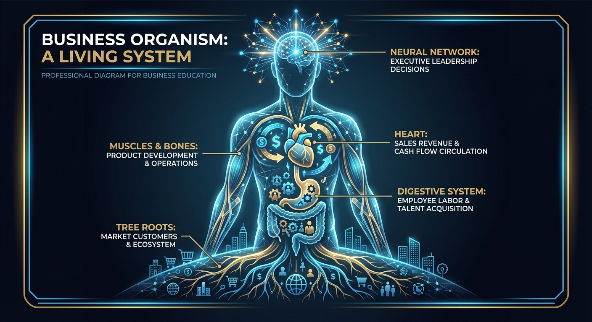
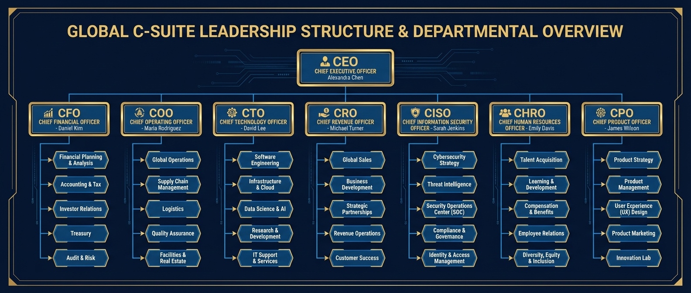
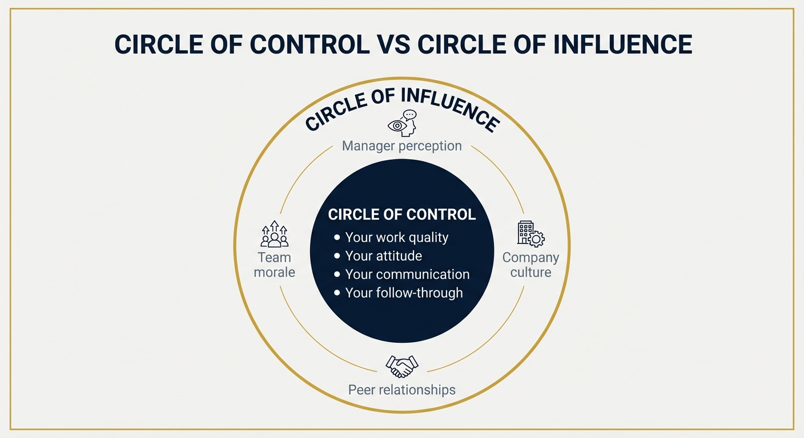

Part 1: The Business Organism
If you're coming from academia, government, or the public sector, you probably carry a mental model of "business" that looks something like: a machine for generating profit, a collection of org-chart boxes, or just "the corporate world."
That model will fail you. Not because it's wrong, but because it's incomplete in the specific ways that will get you fired, overlooked, or chronically frustrated.
A business is not a machine. It is a living organism.
It breathes (cash flow), it eats (customers, talent, opportunity), it grows or dies, and it responds to its environment (the market) exactly the way an animal responds to its habitat. Every person inside it is a cell: some are neurons making decisions, some are red blood cells delivering oxygen, some are white blood cells fighting threats. All of them are necessary. None of them fully understand the whole organism they're part of.
The moment that analogy clicks, everything else in this workbook becomes obvious. So let's make it click.
The Single Biggest Mindset Shift
In academia, your unit of work is the project. You define a hypothesis, design the experiment, gather data, analyze it, and publish. The timeline is years. The validation is peer review. The reward is citation count and reputation.
In business, your unit of work is the outcome. Someone has a problem. You solve it. The timeline is quarters. The validation is revenue, cost savings, or efficiency gained. The reward is staying employed and getting promoted.
The gap between those two modes of work is total, not incremental.
I managed a team of data scientists at a 30-person startup. One of my best hires — brilliant technically — walked into a sales meeting to present his analysis. He opened a text document with raw CSV data pasted directly into it. Columns of numbers. No visualization. No narrative. No slide.
I stopped the meeting mid-sentence — his mid-sentence — and said, "We need to reschedule." Turned to him privately afterward: "I believe your analysis is correct. But that was not communicable to the people in that room. The salesperson you just presented to is effectively your customer. You walked into a client meeting without preparing for your client."
He didn't understand the goal. In academia, the deliverable is the analysis. In business, the analysis is only as valuable as the decision it enables, and decisions require people to understand what you're telling them. That's the whole game.
The Organism Analogy — In Detail
Cash flow is breathing. A business that stops bringing in revenue suffocates. Unlike academic funding, which comes in grants and appropriations and exists largely independently of what you produce, a business must constantly breathe in new money or it dies. Some businesses can hold their breath for a while (that's called runway). But eventually, they need air.
Customers are food. A business needs to consume: customers, talent, opportunities, partnerships. Without a steady diet, it starves. Growth rate is a measure of appetite, and appetite is a measure of health.
Employees are cells. Salespeople are red blood cells, carrying oxygen (revenue) to every part of the organism. Compliance and security teams are white blood cells. Executives are brain cells. Individual contributors are muscle. All necessary. All in service of the whole. None of them working in isolation.
The market is the environment. Organisms that adapt to their environment thrive; those that don't, go extinct. That is the literal mechanism by which companies survive or disappear.
Leadership is the brain. But here is the thing about organisms: the brain doesn't control everything. The heart beats without being told. The immune system operates on its own. Good leaders understand this. They don't try to control every cell. They create the conditions for healthy functioning, and then trust the organism.

The Three Levels of Any Business
From a 5-person startup to a 50,000-person corporation, every business has three layers, and knowing which layer you're operating in and what the other layers need from you is the foundation of business fluency.
Executive Management — The Brain. Sets direction, absorbs risk, decides which markets to enter or exit. They're thinking 1–3 years out. They're measured on revenue growth, profitability, and market position. The most important thing to understand about executives: they rotate. A company gets acquired, a board gets frustrated, a strategy fails, and they're gone. The smaller the business, the more rotational and visible this is.
Middle Management — The Nervous System. This is, in your instructor's opinion, the hardest job in any organization. Middle managers must be able to do what their direct reports do (at least well enough to evaluate it) while simultaneously translating executive vision downward and operational reality upward. They define culture more than executives do, because they have the actual face time with employees. They manage the productivity gaps: when people leave, when skill sets are missing, when the team is the wrong size for the work. They are the glue.
Individual Contributors — The Muscle. Does the tactical work. Writes the code, runs the analysis, serves the customer. Here is what is often missed: the smaller the business, the more valuable each individual contributor, and the more hats they wear. At a 30-person startup, you're not just the data scientist. You're probably also the product person, the analyst, and maybe the one making decisions that a Director of Product would make in a bigger company. Variability of responsibility is, in practice, acceleration.
The word "employee" is sometimes treated like a dirty word, as if it signals some kind of class struggle. Reject that framing entirely. Every person in a business is an employee, including the CEO. If the board decides he's gone, he's gone. The label "employee" is not a position of weakness: it means the business needs what you do. They don't hire people they don't need. Businesses are not charities. You are there because the organism requires your function.
What You Actually Cost
One of the most clarifying things you can understand is the number that doesn't appear on your offer letter: your fully loaded cost.
Your salary is not what you cost the business. Your actual cost includes:
- Base salary — the number you see
- Employment taxes — approximately 7.65% for FICA plus unemployment insurance
- Benefits — health insurance, dental, 401(k) match, paid time off (PTO accrual is real money)
- Equipment — laptop, software licenses, phone, desk, office space per square foot
- Onboarding — the hours your manager and colleagues spend training you instead of doing their own work
- Overhead — utilities, HR, legal, the kitchen snacks
In a large company, your fully loaded cost is typically 1.25–1.5× your salary. At a small company, it can reach 2× your salary because fixed costs spread across fewer people.
At $100,000 in salary, you cost the business $130,000–$200,000 per year. That is a meaningful investment. Your job is to generate a return on that investment that makes it obvious why you're worth it.
Key Takeaways — Part 1
- Business is an organism, not a machine. Cash flow is breathing. Revenue stops = death.
- The unit of work in business is the outcome, not the analysis. The deliverable is the decision it enables.
- Middle management is the most underrated and most difficult job in any organization.
- Smaller company = more hats = more learning. This is a feature, not a bug.
- You cost 1.25–2× your salary. Know your ROI.
Think about a job, internship, lab, or organization you've been part of. Apply the organism analogy:
- What was the "food" it needed to survive? (Revenue, grants, students, donors?)
- Who were the red blood cells? (Who brought in the resources?)
- Who were the white blood cells? (Who protected it from threats?)
- Who were the brain cells? (Who set direction?)
- What was the biggest threat to its survival? How did it respond?
Part 2: Business Structure — The Anatomy
Knowing that a business is an organism is the philosophy. Knowing how it's actually built is the anatomy. This section gives you the structural map: the org chart made legible.
The C-Suite
At the top of any company, you will find the C-suite: the chief officers. Here are the four that actually matter:

CEO — Chief Executive Officer. Owns the vision, carries the ultimate risk, and is accountable to the board. Every other executive's job exists in service of what the CEO is trying to accomplish. The CEO doesn't make decisions alone; they make them with input from every other C. But they bear the consequence.
CFO — Chief Financial Officer. In every mature company your instructor has worked with or observed, the CEO and CFO are in near-constant partnership. Almost no significant decision is made without both people in the room. The CFO doesn't just "do accounting"; they are a strategic partner who tells the CEO whether the vision is financially survivable. No CFO signature, no transaction. Full stop.
COO — Chief Operating Officer. Everything internal that doesn't touch external customers is likely the COO's domain. Projects, legal, regulatory, IT, software development, the logistics of running a conference. If it's inside the machine, the COO owns it. Think of the COO as the person who makes the organism run while the CEO decides where it's going.
CRO — Chief Revenue Officer. Sales. Everything external that brings money in. Marketing, lead generation, sales teams, account management. If the COO is the defense, the CRO runs the offense.
Know which C-level executive you ultimately roll up to. In a big company, that determines which metrics you need to care about, which language you need to speak, and whose goals you should be making easier to achieve. If you roll up to the CTO and there's a platform migration happening, your job is to make that migration easier. That's how you get visible. That's how you get promoted.
Beyond the big four, there are many other Cs: Chief Technology Officer, Chief Information Officer, Chief Data Officer, Chief Security Officer, Chief Marketing Officer. Note: the CMO has the highest turnover of any C-suite position and is the least likely to hold a degree in their own field. The market is cyclical, brand messaging is subjective, and attribution is hard. If you're considering a marketing-adjacent career path, understand that it's a high-velocity lane.
The One Person Who Played Both Games
In your instructor's career, there was exactly one person he encountered who managed to operate as both executive management and as someone who commanded sales commissions, someone who could close deals and also govern strategy. That person made more money than anyone else in the building. If you can figure out how to play both the management game and the sales game simultaneously, it is worth every effort to learn how. It is rare. That's why it pays.
Sales and Operations: Offense and Defense
Think of every business as a sports team with two units:
Sales is offense. Their job is to score, to bring in new revenue. Salespeople operate under different rules than everyone else in the company. They earn commissions. Their compensation fluctuates with performance. They have their own culture, their own success rituals, their own measurement systems. They are, in many businesses, treated like a separate species. This is by design.
Operations is defense. Their job is to deliver what sales promised, maintain the systems, serve the customers, and keep the business running. Operations people typically earn fixed salaries: more stability, less upside.
One of the best salespeople your instructor ever observed was someone whose style was entirely unexpected. Away from the desk, she was happy-go-lucky, relaxed, warm, easy to be around. In a client meeting, she was equally at ease. But in an internal meeting, talking strategy about an account, planning an approach, she became one of the most serious, focused, demanding people in the room. She had a "book" of 25 target companies. The top two got the hunters. The bottom ten got the lead-gen callers. She knew exactly which accounts warranted her intensity and which didn't. Watching that was an education in itself.
The Sales Funnel
The sales process in any real organization is not one person doing everything. It's a pipeline with distinct roles at each stage:
- Lead Generation — Identifying and contacting potential customers. The "small book" — cold calls, outreach, volume work.
- Qualification — Evaluating whether a lead has a problem you can solve and a budget to pay for the solution.
- Technical Presentation — Bringing in subject matter expertise to demonstrate fit. This is where people like you will most often appear in sales processes.
- Intent and Close — Getting the signature. This is pure sales territory.
- Account Management — Maintaining and growing the relationship after the close. Revenue retention and upsell opportunity.
If you work in operations, you will eventually be pulled into stage 3, asked to present, explain, or validate something in front of a prospective customer. When that happens, remember: the salesperson is your teammate, the prospect is your customer, and your job is to make the room feel confident, not to demonstrate how much you know.
The Tension That Never Resolves
"Why does the salesperson get a free trip to Maui for hitting their number when we're the ones who actually fulfilled the order?"
Every person who has ever worked in operations has thought this. It is a legitimate grievance. Operations does the work that revenue requires. Sales gets the recognition that revenue generates. This tension is structural; it lives in the design of most businesses and it never fully resolves. Understanding it intellectually protects you from letting it become a source of resentment that damages your own performance. The system isn't fair in the way you might want. It is, however, legible, and legible systems can be worked with.
Finance Vocabulary You Need Right Now
You don't need to be a CFO. You need to be able to sit in a room where financial language is being used and understand what's happening. Here are the terms most likely to appear:
| Term | What It Means | Why It Matters |
|---|---|---|
| P&L | Profit and Loss — income minus expenses | "Managing a P&L" means owning a budget. This is a milestone. |
| Revenue | Total money coming in before any deductions | The top line. Everything starts here. |
| Margin | What you keep after costs | High revenue with thin margin is a fragile business. |
| CapEx | Capital Expenditure — assets with resale value (equipment, buildings) | Can be depreciated; more budget flexibility for finance. |
| OpEx | Operating Expenses — recurring costs (salaries, software, rent) | When companies "cut costs," they're trimming OpEx. Your salary is OpEx. |
| EBITDA | Earnings Before Interest, Taxes, Depreciation & Amortization | A proxy for operational profitability; how investors compare companies. |
| CAC | Customer Acquisition Cost — average spend to win one customer | At an insurance company, this cost can be enormous. It changes how you think about churn. |
| LTV | Lifetime Value — expected total revenue from one customer | LTV ÷ CAC tells you whether your business model is actually working. |
| Table Stakes | The minimum required just to be in the game | Understanding that money governs everything is table stakes for business. |
In academia, if a project gets de-prioritized, you usually continue it in parallel, at a slower pace perhaps, but you see it to completion. In business, an executive can walk in on a Tuesday and say "stop everything on that. We're pivoting." Not gradually. Immediately. The arm gets chopped off and the organism keeps moving. Brutal as it sounds, that is also how businesses survive rapidly changing markets. The faster you internalize this, the less disoriented you'll be when it happens to you.
Negotiation Is Always On the Table
One of the largest mindset gaps between academia/government and business is this: everything is negotiable.
Your salary. Your title. Your project scope. Your remote work policy. Your performance review timeline. Your role definition.
Not from day one; negotiability is earned. It accrues as you prove that you deliver results, that you're reliable, that your judgment can be trusted. But once you've built that track record, expecting everything to be fixed is leaving significant value on the table. The business world operates on negotiated terms: contracts, compensation, scope, deadlines, all of it negotiable between parties who have established credibility with each other.
Key Takeaways — Part 2
- Know which C-executive you roll up to. Align your work to their goals — that's how you get visible.
- Sales and operations tension is structural. Understanding it prevents resentment.
- Learn the finance vocabulary. You don't need to be the CFO. You need to follow the conversation.
- Executives can stop any project at any time. This is not dysfunction — it's how organisms adapt.
- Negotiability is earned, not assumed. Build credibility first. Then negotiate everything.
Pick a company in the industry you're targeting. Spend 30 minutes on their website and LinkedIn:
- Identify who holds the CEO, CFO, COO, and CRO (or equivalent) roles.
- Find one public statement from the CEO about the company's current strategic direction.
- If you were hired into a role at this company, which C-executive would you ultimately roll up to? What are their publicly stated priorities?
- Based on that, write one sentence describing how your expertise connects to what that executive is trying to accomplish.
Part 3: Culture — The Nervous System
If you've never worked in a private-sector organization, you might hear the phrase "company culture" and dismiss it as corporate jargon, the kind of thing that appears on a poster in the break room and has no bearing on actual work.
That assumption will cost you.
Culture is the most powerful invisible force in any organization. It will shape your daily experience more than your title, your salary, or your team. It determines whether good ideas surface or get suppressed, whether people help each other or guard their territory, whether you'll be energized or exhausted by year two.
And yet: most people entering business for the first time completely fail to assess it.
The Story That Changed My Mind
I was interviewing for my first mid-sized company role. During the interview, the COO — unprompted — looked me in the eye and said, "We have a really great culture here."
I almost laughed out loud. I had been in government and academia. I had heard those words before. They meant nothing. Culture was the word organizations used when they wanted to paper over dysfunction with enthusiasm.
Then I started working there. And I discovered that she was right. It was real. You could feel it. People genuinely wanted to be there. They helped each other. They named each other in meetings. They self-managed. When something needed to be done that wasn't anyone's job, someone did it, without being asked and without expecting recognition.
That experience recalibrated everything I thought I knew about what a workplace could be.
What Good Culture Actually Looks Like
That company had approximately 90 employees (40 remote, 50 in-office). They had collaboratively developed seven core values, and they didn't just post them on the wall. They operationalized them:
- "We are fanatical about our team — people are our edge."
- "We are obsessed with finding a better way — ask 'Why not?'"
- "Shoot straight or we miss our mark — say it how it is."
- "Don't wait for things to happen — make things happen."
- "We are accountable to ourselves and each other — Own It."
- "It's not the hours we put in — it's what we put into the hours."
- "Having fun is not a perk — have fun or go home."
These weren't decorative. Every monthly all-hands meeting began with a story: someone had put a note in a jar during the month naming a colleague who had lived one of these values, and the story was read aloud. Not a performance review, not a bonus, just a story read to the whole company about a person who did something worth noticing. New employees went through cross-team onboarding: mandatory weekly lunches with people from different departments for their first six weeks. Every meeting ended with each person stating what they would accomplish before the next meeting. Publicly. On the record.
That's what values that are actually lived look like.
When Culture Dies — The Acquisition Story
That same company was eventually acquired by a much larger corporation. The large company liked the culture, they said so explicitly. They tried to roll out the seven values across their entire organization.
It didn't survive the translation. A culture built over years in a 90-person company, where the CEO knew everyone's name, does not port cleanly into a 5,000-person organization where HR runs the onboarding. The colors of the rainbow just got sucked into gray. That's the only way I know to describe it.
The first real signal of cultural degradation? HR started scheduling "change management training" sessions. If you join a company and within your first year HR calls a mandatory change management training: start watching the exits. That training is organizational triage.
The Culture Industry
Culture problems create an entire consulting ecosystem. Your instructor observed a company hire a culture consultant at $350 per hour, someone with a four-year degree, no psychology training, and a history of having left four different jobs. She ran monthly full-day sessions: a morning meeting with the CEO, a training block for middle management, group sessions, one-on-ones. The company paid a significant amount of money for this over eighteen months.
There is a lucrative market for culture consulting precisely because culture is hard to fix once it's broken. The lesson is not that culture consultants are frauds; some are excellent. The lesson is that good culture requires building the right practices from the beginning, before you need a consultant to fix what broke.
Red Flags — What to Walk Away From
Before you take any role, assess the culture. The signals are visible if you know what to look for:
Bad Culture Signals:
- Employees who complain — especially about each other
- Personal grievances brought constantly into work conversations
- Leaders who say one thing and do another
- High turnover, especially among good people
- HR interventions and change management trainings
- Overbearing micromanagers at the executive level
- Information hoarded rather than shared
- "Chip on the shoulder" employees who carry chronic grievances
Good Culture Signals:
- Cross-functional collaboration happens naturally
- Transparency about company performance — wins and losses
- Investment in your development: training, mentorship, conferences
- Accountability without blame — people say what they'll do and do it
- Leaders model the values they talk about
- People stay — and the ones who leave do so with gratitude
- Recognition practices that are specific, not generic
Circle of Control vs. Circle of Influence
One of the most clarifying frameworks for navigating any culture, good or bad, is the distinction between what you control and what you merely influence.

Your Circle of Control is small and precious: your work quality, your attitude, how you communicate, whether you follow through on your commitments.
Your Circle of Influence is much larger: your team's morale, your manager's perception of you, the culture of the groups you're part of, the people who observe how you handle difficult situations.
You cannot control culture. You can influence it, every day, in every interaction. Every meeting you show up to prepared is a small deposit into the culture account. Every commitment you honor is another. Every time you do something that nobody asked you to do because it needed to be done, you are shaping the culture you live in.
Conversely, every time you complain in a way that creates no actionable solution, you are making a withdrawal. Every time you let a commitment slip without communicating it, same thing.
You are either a net contributor or a net detractor. Autopilot, passive and neutral, just showing up, is in most cultures a slow withdrawal.
Five Ways to Show Up Well — Starting Day One
- Good energy. Smile. Make eye contact. Be interested in the person you're talking to. This costs nothing and signals more about your character than most skills on your resume.
- Good questions. Ask about the business. "What's the biggest challenge your team is trying to solve this quarter?" is a question that earns respect at any level. People who ask good questions are assumed to have good judgment.
- Good follow-through. When you say you'll do something, do it. When you can't, communicate early. This is rarer than it sounds, and it is the fastest way to build the trust that leads to autonomy and leverage.
- Customer first. At every level of every organization, leaders notice and protect employees who consistently put the customer's needs first. You will not get fired for being the person who prioritized the client.
- Know when to say no. Accountability runs in both directions. If something lands on your desk that is outside your scope and that you cannot do well, it is better for the culture to say so clearly than to take it on badly. Saying no thoughtfully is a sign of self-awareness, not weakness.
Key Takeaways — Part 3
- Company culture is real. It will affect your daily life more than your job title.
- Good culture is operationalized — values that are measured, recognized, and demonstrated by leadership.
- The acquisition story is a warning: culture doesn't port. When companies merge, culture usually doesn't survive.
- You influence but do not control culture. Focus your energy accordingly.
- The fastest culture-builders: energy, questions, follow-through, customer focus, honest scope management.
For any company you're considering joining, or one you currently work for:
- Find three Glassdoor reviews written in the last 12 months. Look for patterns in what people mention as strengths and weaknesses.
- During your next interview (or a conversation with a current colleague), ask: "What's one thing this company is actively trying to improve about its culture?" Listen for specificity. A specific answer is usually honest. A vague answer is usually not.
- Identify three things currently in your Circle of Control at work or school. Write them down. Commit to improving each one in the next 30 days.
Part 4: Why Traditional Business Education Fails You
Two PhDs. Zero business courses. That's your instructor's background. When he was first handed a team and told to manage it, there was no training, no mentorship, no guidance. Just a team and an expectation.
That is, it turns out, more common than the exception.
Traditional business education (the $200,000 MBA) is not designed for this. It's designed for a world that, in many respects, no longer exists. Here is why it fails, and why this course takes a different approach.
1. It's Too Expensive for Common Sense
Business is not complicated. At its core: create value, charge for it, keep the difference. That's it. The complexity is in the execution: the people, the market dynamics, the timing. But the core concept is simple enough to explain in an afternoon.
Business schools charge $200,000 for a two-year program to teach this, wrapped in case studies, frameworks, cohort networking, and credential signaling. Some of that is valuable. Most of the foundational content? It's common sense, translated.
This course exists because you should not need to spend $200,000 to understand what a P&L is, why revenue matters more than cost savings, or how to explain your value in one sentence.
2. It Overemphasizes Management — Which Is Evaporating
The traditional MBA is built around an assumption: you'll climb a management ladder. Individual contributor → manager → senior manager → director → VP → C-suite.
That ladder is getting shorter. Technology has automated many of the functions middle management once performed: reporting, tracking, oversight, coordination. Organizations are flatter than they were in 1985, and they're getting flatter. The companies that are winning aren't winning with more managers. They're winning with better doers, people who identify problems and solve them, who don't wait for permission, who create value regardless of their title.
What this course trains you to be: a change maker. Not a manager. Not a director. Someone who sees what's broken and fixes it.
3. It Completely Skips Product
Product is how modern businesses create value. It is what customers actually pay for. It is the foundation of every company from Apple to Zoom to the startup down the street.
Traditional business education teaches finance, marketing, strategy, and operations. Product gets a guest lecture. Maybe a chapter.
This is structurally insane given that investors evaluate companies on product-market fit, sales teams sell product value, and almost every role in a modern organization now requires at least product literacy.
This course treats Product as a first-class dimension (Workbook 4). Not an afterthought. A core competency.
4. It Teaches You to Manage, Not to Create Impact
Managing is maintenance: keeping what's already running. Impact is creation: solving problems that haven't been solved, building something that wasn't there. The modern world needs far more of the second than the first. Yet everything from business school curriculum to corporate training programs optimizes for the first.
This course operates on action-oriented timelines: learn it, apply it, measure it, iterate. The goal is to make you useful in 30 days, not in two years.
Part 5: Your Path — The Three Tracks
This workbook is designed for three distinct learner profiles. Read all three, but commit to one. Your track determines your assignment.
Undergraduate / Early Career
Your challenge: You have limited professional experience. Internships, research assistantships, part-time work, but not a sustained role inside a business organization.
Your focus this workbook:
- Learn the vocabulary — don't fake it, but don't be ashamed of not knowing it yet
- Understand the hierarchy — know what level you're entering and what the levels above you care about
- Find mentors before you need them — identify two people in your network who work in private industry and buy them coffee
- Ask questions — it's expected and respected at your stage, not embarrassing
Your assignment:
- Identify 3 people in your network in private industry. Ask them: "What's one thing you wish you knew before your first corporate job?"
- Write down 5 business terms from this workbook that were new to you. Look up a concrete example of each one being used.
- Practice explaining what a business does in one sentence — without jargon — for three companies you'd like to work for.
Master's / Mid-Level Transition
Your challenge: You have professional experience, but in academia, government, or a non-profit. You're used to different incentive structures, different timelines, and different definitions of success.
Your focus this workbook:
- Translate your skills into business language — every project you've run has a business impact equivalent
- Learn the metrics that matter in your target industry — not just the names, but why they matter
- Prove you deliver impact, not just process — business cares about what changed, not what was done
Your assignment:
- For a project you've worked on, write this sentence: "I did X, which resulted in Y, which meant Z for the organization." No jargon. Concrete outcomes only.
- Identify the three most important financial metrics in your target industry. For each, find one example of a company reporting on it publicly and write one sentence explaining what the number means.
- Map your current skills to one of the C-suite roles from Part 2. Which executive would most benefit from what you know how to do?
PhD / Senior Professional Pivot
Your challenge: You have deep expertise. You've led projects, perhaps managed people, possibly run a lab or department. Your risk is the opposite of Track A: over-qualifying, over-explaining, and over-thinking.
Your focus this workbook:
- Lead with value, not credentials — the business room doesn't care about your degrees, it cares about your output
- Be a translator, not a lecturer — simplify complexity into actionable insight without condescension
- Remain coachable — seniority in one world does not automatically transfer to another
Your assignment:
- Write a 30-second pitch that doesn't mention your degrees or your previous title. Start with the problem you solve.
- Identify one business problem in your target industry that your specific expertise is uniquely positioned to address. Write a one-paragraph memo describing the problem, your approach, and what the business outcome would be.
- Find someone 2–3 levels above where you want to enter in your target industry. Request a 20-minute informational call. The goal is not to pitch yourself — it's to understand their priorities.
Part 6: Public Sector Transition
If you're coming from government, teaching, healthcare administration, or the non-profit world, this section is specifically for you. The differences are real and significant; so are the transferable strengths.
| Public / Academic Sector | Private Sector |
|---|---|
| Mission-driven (explicit) | Profit-driven (can also be mission-driven, but revenue comes first) |
| Budget cycles measured in years | Budget cycles measured in quarters |
| Job security tied to tenure or civil service | Job security tied to performance |
| Hierarchical but slow-moving | Flat or hierarchical — but fast-moving either way |
| Change is rare and procedural | Change is constant and often abrupt |
| Information shared broadly (sometimes) | Information is currency — shared selectively |
| Failure has limited immediate consequences | Failure is tangible and measured in dollars |
| Output = activity (reports filed, hours logged) | Output = outcomes (revenue impacted, problems solved) |
What Transfers
- Project management — You know how to run a multi-stakeholder initiative. That is genuinely rare.
- Stakeholder communication — If you've navigated a public school board, a grant committee, or a government review panel, you can handle internal politics.
- Writing and presentation — Academic and government writing trains clarity of thought. Business needs this desperately.
- Subject matter expertise — You have deep knowledge in a domain that a business needs but cannot easily hire. That is leverage.
- Ethics and compliance awareness — In regulated industries especially, this background is valuable from day one.
What You Need to Build
- Results orientation — The question is not "did you do it?" It's "what changed because you did it?"
- Speed and iteration — Business moves faster than any academic or government cycle you've experienced. Done and imperfect beats perfect and late.
- Revenue thinking — Every initiative should have an answer to: "how does this help the business make more money, save money, or reduce risk?"
- Comfort with ambiguity — You will not always have clear instructions, a complete dataset, or a defined process. This is normal. Navigate it anyway.
You have valuable skills. The trick isn't to become someone else; it's to translate what you already know into a language business people understand. You don't need to reinvent yourself. You need to re-label yourself.
Book Recommendations
These are not decorative suggestions. Your instructor has read each of these and references them because they had a material impact on how he thinks. They are organized by the section of this workbook they most directly support.
On Business Fundamentals
The 80-20 CEO — Alex Hormozi
The Pareto principle applied ruthlessly to business. 20% of your effort produces 80% of your outcomes. This book forces you to identify which 20% you're wasting. Essential reading for understanding how business prioritization actually works.
Your Next Five Moves — Patrick Bet-David
Strategic thinking for career and business. How executives think two, three, and five steps ahead. If you want to understand how decisions get made at the top of an organization, this is the book.
Orbiting the Giant Hairball — Gordon MacKenzie
How to survive and thrive inside large organizations without losing your creativity. Corporate life is a hairball: tangled, messy, full of things that shouldn't connect but do. This book teaches you to orbit it rather than be consumed by it. Required reading for anyone joining their first large company.
The 4-Hour Workweek — Tim Ferriss
Redefines the relationship between time and output. Challenges the assumption that effort equals value. The entrepreneurial mindset applied to career, relevant even if you never plan to start a company.
Tools of Titans — Tim Ferriss
Distilled tactics, routines, and frameworks from some of the highest performers in business, sport, and creative fields. Use it as a reference: pick what fits you, ignore what doesn't. The density of useful ideas per page is exceptional.
On Business Structure
The First 90 Days — Michael Watkins
The definitive guide to starting any new role. Most companies will ask you for a 30-60-90 day plan. This book explains how to build one that actually gets you taken seriously. Buy this before you interview for your first private-sector role, not after you get the offer.
The 22 Immutable Laws of Marketing — Al Ries & Jack Trout
A bird's-eye view of how companies anchor themselves in the market. Why being first matters. Why being number two can still win. Why the market is mostly psychology. Short (120 pages), dense with insight, and referenced constantly by business leaders.
Finite and Infinite Games — James P. Carse
Finite games have winners and losers (zero-sum). Infinite games create more value for all participants. Career, relationships, and the best business partnerships are infinite games. This book changes how you think about competition and collaboration.
The Goal — Eliyahu Goldratt
A business classic written as a novel. About finding bottlenecks, the places in any system where throughput is constrained. Referenced constantly in operations, agile, and process management. If you work in any role that touches production, logistics, or delivery, this is required reading.
Thinking, Fast and Slow — Daniel Kahneman
Nobel Prize-winning psychology applied to decision-making. Fast thinking is tactical: reactive, instinctive, immediate. Slow thinking is strategic: deliberate, analytical, long-term. Understanding which mode you're in, and which one the situation requires, is a career-level skill. This book is cited in nearly every serious business, economics, and leadership conversation.
On Culture
The Heart of Business — Hubert Joly
Leadership principles built around treating people as the primary asset. Reflects the kind of culture described in Part 3 of this workbook, where values aren't posters, they're practices. Particularly relevant if you're entering a larger organization and want to understand what ethical, people-first leadership looks like from the inside.
The Culture Fix — Will Scott
A practical guide to transforming a toxic culture into a healthy one. If you join an organization with cultural problems (and eventually, you will), this gives you the framework for diagnosing what's wrong and contributing to the fix. Not just for leaders. Anyone can apply these principles from any level.
HBR's 10 Must Reads on Building a Great Culture — Harvard Business Review
A curated collection of the most important research and thinking on organizational culture. Each piece is independently valuable. Together, they form a comprehensive view of what makes cultures work and what makes them fail. Useful whether you're assessing a potential employer or trying to improve your current environment.
Reflection Questions
Write your answers. Don't skim these. The value is in the specificity of your thinking, not the quality of your prose.
1. What was your mental model of "business" before this workbook? How does the organism metaphor change or challenge that model?
2. Which of the three organizational levels (executive, middle management, individual contributor) do you most relate to, and which do you understand least? What would it take to understand that level better?
3. What one skill from your background translates most directly to business? What is the business-language version of that skill, the one sentence you'd say in an interview?
4. Based on the culture red flags and green flags in Part 3: describe the culture of the last organization you were part of. What did it get right? What would have made it better?
5. What is your Circle of Control in your current situation, at work, school, or in your job search? Name three specific things that are fully within your control right now that you have not been treating as such.
Your 30-Day Action Plan
Commitments for the Next 30 Days
Week 1 — Vocabulary & Structure
Three business terms I will learn this week (define, find an example of, use in conversation):
Week 2 — Network & Culture
Two people in private industry I will contact this week and the one question I'll ask each of them:
Week 3 — Translation
One project or experience from my background, translated into a single business impact sentence:
Week 4 — Research
One target company researched: C-suite mapped, strategic direction identified, my connection to their priorities written in one sentence:
Next: Workbook 2 — The 80/20 Operating System: Sales, Revenue, and How Decisions Actually Get Made
Class2Career © 2026 — Ignis Spindler, PhD